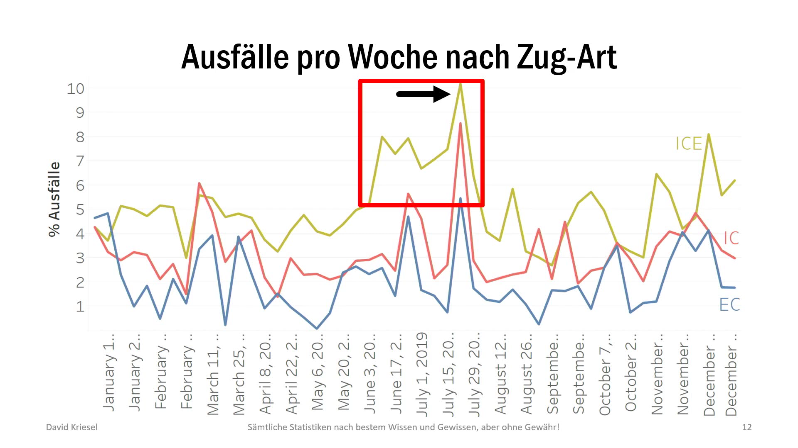

Ein Mann speichert ein Jahr lang jeden Halt jedes Fernzugs in Deutschland – und rechnet nach.

Folie aus «BahnMining – Pünktlichkeit ist eine Zier» von David Kriesel, 36C3, media.ccc.de.
youtu.be/0rb9CfOvojk